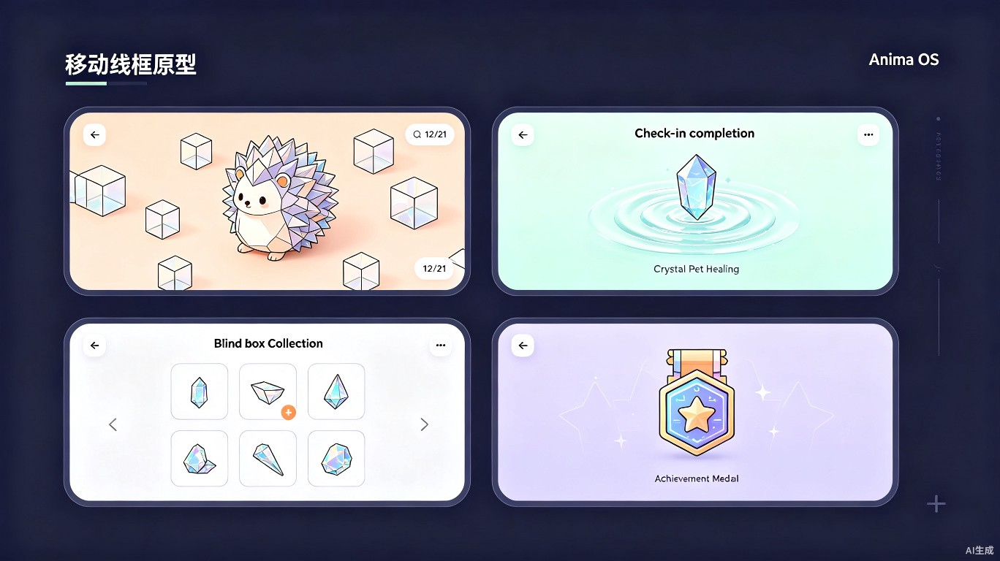
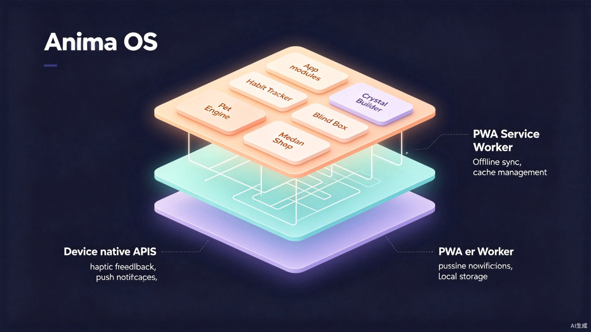

智能多模态几何晶体宠物陪伴与 21 天习惯成型 App
习惯养成赛道存在一个结构性矛盾：工具越"严格"，用户流失越快。这个矛盾至今没有被任何一个产品真正解决。
市面上的习惯养成工具普遍采用"全或无"刚性惩罚机制——用户只要中断一天打卡，连续天数即刻归零，宠物饿死或枯萎。这种机制对自律性极强的用户可能有效，但占用户绝大多数的普通人却在经历偶发失败后陷入"断卡→自责→焦虑→彻底放弃"的恶性循环。
心理学上，这种状态叫做习得性无助（Learned Helplessness）。用户不是"懒"或"没有毅力"，而是现有工具的惩罚设计在心理学上就是错的——它在每一次偶发失败后施加二次惩罚（归零带来的挫败感），把用户推向彻底放弃。
全球习惯养成与心理健康类应用市场在 2025 年达到约 48 亿美元规模，年复合增长率约 12%。然而用户留存数据极其惨淡：主流打卡类 App 的 30 日留存率普遍低于 15%，大部分用户在第一周内流失。
Anima OS 的设计灵感来自两个看似不相关的领域：
如果没有 Anima OS 这类产品，年轻人群体将继续在"放纵→打卡→断卡自责→彻底放弃"的刚性焦虑陷阱中循环。现有工具不会改变策略——因为它们的商业模型依赖于用户的" guilt-driven "回归（因自责而重新打卡），但这恰恰是导致长期流失的元凶。
18-25 岁，正在经历学业压力、求职焦虑或初入职场的适应期。注意力深受短视频碎片化多巴胺绑架，对同质化表格打卡工具审美疲劳。极度依赖即时情感羁绊与视觉荣誉激励。
高情感需求 视觉驱动
22-30 岁，意识到自己需要改变某些行为模式（如熬夜、刷手机、不运动），曾尝试过多种打卡工具但均在 1-2 周内放弃。特征是"不是不想变，而是每次失败后就彻底放弃了"。
多次尝试失败 寻求容错
| 场景 | 触发时机 | 用户心理状态 | Anima OS 如何介入 |
|---|---|---|---|
| 碎片化打卡 | 通勤途中、课间休息、排队等候 | 无聊但不想打开沉重工具 | 单手拇指操作，10 秒内完成打卡，即时获得水波纹+弹跳反馈 |
| 深夜焦虑期 | 睡前 23:00-01:00 | 因不确定性产生的拖延和焦虑 | 打开晶体宠物页面，通过拼回散落积木获得掌控感和治愈 |
| 短视频戒断 | 打开短视频 App 时 | 明知不该看但无法自控 | 系统推送提醒：你的水豚正在等你，积木散落了需要你帮忙拼回 |
| 偶发失败恢复 | 忘记打卡后的第二天 | 恐惧归零，想放弃 | 看到积木只是散落而非消失，3 次点击即可拼回，挫败感大幅降低 |
| 里程碑庆祝 | 21 天周期完成 | 成就感和自我认同 | 空间神兽完美合拢，签发电子勋章，引导申领物理纪念章 |
通过反脆弱容错机制，将 D7 留存从行业平均 25% 提升至 55% 以上。
通过游戏化空间解谜降低枯燥感，将 21 天里程碑完成率提升至 30% 以上。
通过情感羁绊和物理纪念章，达到 NPS 50+ 的用户口碑传播水平。
| 原则 | 含义 | 反面（我们不做） |
|---|---|---|
| 反脆弱优先 | 偶尔失败只让积木散落，不归零、不惩罚 | 断卡归零、宠物死亡等刚性惩罚 |
| 空间解谜而非表格 | 用拼积木的空间操作替代勾选表格 | 日历格子、打卡列表、进度条 |
| 宠物即精神镜像 | 晶体的形态映射用户的精神状态 | 固定形态的虚拟宠物，与用户状态无关联 |
| 即时感官奖励 | 每次操作都有水波纹、弹跳、粒子反馈 | 打卡后只显示一个"完成"文字 |
| 数字到物理的闭环 | 数字荣誉可以转化为物理纪念品 | 纯数字成就，无实体承载 |
| 单手拇指优先 | 所有核心操作在拇指热区内完成 | 需要双手操作或精确点击 |
| # | 模块 | 功能描述 | 优先级 |
|---|---|---|---|
| F01 | 宠物系统 | 几何晶体宠物的创建、状态管理、视觉表现。宠物由积木组成，积木的完整度映射用户习惯执行情况。物种包括刺猬、水豚、六角恐龙等，每种有独特视觉特征。 | P0 |
| F02 | 习惯设定 | 用户创建、编辑、删除习惯目标。每个习惯绑定一个宠物槽位，支持每日/每周/自定义频率。习惯名称、图标、颜色、提醒时间均可自定义。 | P0 |
| F03 | 打卡与积木 | 核心打卡流程：完成习惯→积木归位→宠物愈合动画。未完成→积木散落（不消失）。用户可随时拼回散落积木，拼回过程本身有水波纹+弹跳反馈。 | P0 |
| F04 | 感官反馈 | 逆熵水波纹涟漪、Juice Bounce 弹跳、粒子飘散等即时视觉反馈。打卡成功时触发，拼回积木时触发，里程碑达成时触发更高级的粒子爆发。 | P0 |
| F05 | 21 天里程碑 | 以 21 天为首个里程碑周期。完成全部打卡→空间神兽完美合拢归位→签发电子勋章。周期结束后可开启新物种、新周期。 | P0 |
| F06 | 以太晶屑盲盒 | 用户每日打卡可获得以太晶屑（虚拟货币），用于开启盲盒获取随机晶体碎片。碎片可装饰宠物空间或解锁新物种外观。 | P1 |
| F07 | 物种图鉴 | 展示所有可解锁物种及其解锁条件。已解锁物种可切换为主宠物。未解锁物种显示剪影和进度提示。 | P1 |
| F08 | 电子勋章墙 | 展示用户获得的所有电子勋章，包括 21 天勋章、连续打卡勋章、物种收藏勋章等。支持分享到社交平台。 | P1 |
| F09 | 物理纪念章商城 | 用户完成 21 天后可一键申领对应物种的 1:1 物理实体黄铜纪念章。支持移动端支付网关、地址填写、订单跟踪。 | P1 |
| F10 | 智能提醒 | 基于用户打卡历史和行为模式，在最佳时机推送提醒。提醒文案由宠物"口吻"发出，如"我的积木散落了，需要你帮忙"。支持用户自定义静默时段。 | P1 |
| F11 | 离线与同步 | PWA 架构支持离线打卡和数据缓存。恢复网络后自动同步至云端，解决弱网环境下的使用问题。 | P2 |
| F12 | 数据统计 | 展示用户的习惯执行率趋势图、连续天数、宠物完整度变化曲线等。帮助用户从数据层面感知自己的进步。 | P2 |
| F13 | 断签重组机制 | 用户断签后，对应的晶体积木会「散落」在宠物场景中。用户回来后需手动拖拽积木回到宠物周围（重组），拖拽过程有光效+微量经验反馈，重组完成后才能开始当天的打卡。 | P1 |
| F14 | 碎片合成/兑换系统 | 3 个同系列碎片可合成一个宠物装饰品（背景光环、围栏、地面特效等）。装饰品直接显示在宠物场景中，不同稀有度碎片合成不同品质装饰品。 | P1 |
| UI-01 | 积木分区排列 | 根据习惯数量自动调整积木排列：3 个以内单圈排列；4-5 个自动分为内外两圈（内圈核心习惯较大，外圈次要习惯较小），颜色区分层级。 | P1 |
| S-01 | 留存激励策略 | 连续打卡阶梯奖励（3 天+1 晶屑、7 天+3 晶屑、14 天+5 晶屑）。断签不扣碎片和经验，仅失去连续天数奖励。Streak 显示连续天数，归零不产生惩罚感。 | P0 |
每个用户拥有一只几何晶体宠物。宠物由若干积木块组成，积木的"归位数量 / 总数量"决定宠物的视觉完整度。积木分为三种状态：
用户打开 App → 看到宠物主页 → 宠物视觉状态反映当前积木完整度 → 散落积木围绕宠物缓慢旋转漂浮 → 用户点击散落积木 → 积木飞回宠物身上 → 触发水波纹 + 弹跳反馈 → 宠物完整度提升 → 宠物发出满足的视觉信号（如晶体光芒增强）。
| 物种 | 视觉特征 | 精神映射含义 | 解锁条件 |
|---|---|---|---|
| 小刺猬 | 尖锐几何晶体刺，散发微光 | 外表尖锐但内心柔软 | 默认解锁 |
| 水豚 | 圆润晶体体态，头顶一颗橘子积木 | 平静接纳一切 | 完成首个 21 天 |
| 六角恐龙 | 半透明晶体身体，外鳃如光纤 | 脆弱但拥有再生能力 | 3 个 21 天周期 |
| 猫头鹰 | 多面体晶体头部，360 度旋转 | 在黑暗中保持清醒 | 5 个 21 天周期 |
| 北极狐 | 冰蓝色晶体皮毛，渐变透明 | 在极端环境中坚韧生存 | 10 个 21 天周期 |
flowchart TD
A["用户打开 App"] --> B{"今日习惯已完成？"}
B -->|是| C["显示宠物完整态\n积木全部归位"]
B -->|否| D["显示散落积木\n宠物有缺口"]
D --> E["用户点击打卡按钮"]
E --> F["积木归位动画\n水波纹+弹跳反馈"]
F --> G["宠物愈合\n完整度+1"]
G --> H["获得以太晶屑 x1"]
C --> I["查看盲盒/图鉴"]
H --> I
style A fill:#1c2333,stroke:#7edbc4,color:#e6edf3
style E fill:#1c2333,stroke:#ffb088,color:#e6edf3
style F fill:#1c2333,stroke:#b8a9ff,color:#e6edf3
style G fill:#1c2333,stroke:#7edbc4,color:#e6edf3
| 规则 | 描述 |
|---|---|
| 散落不消失 | 未打卡时积木进入"散落态"而非消失。用户可以在任意时刻手动点击散落积木将其拼回（每日最多拼回 3 块，超过需通过正常打卡归位）。 |
| 锁定机制 | 积木散落超过 72 小时后进入"锁定态"，变为半透明，无法手动拼回。用户需完成一次正常打卡才能解锁全部锁定积木。 |
| 弹性容错 | 21 天周期内允许最多 3 天未打卡（积木散落但不影响里程碑判定）。超过 3 天未打卡，里程碑判定延迟——每多 1 天未打卡，需额外补 2 天打卡。 |
| 感官反馈层级 | 单次打卡：水波纹涟漪 + 积木飞行动画。连续 3 天打卡：额外粒子爆发。连续 7 天：宠物发出脉冲光芒。21 天完成：全屏粒子庆祝 + 神兽合拢。 |
每次完成打卡获得 1 个以太晶屑。每日最多通过打卡获得 5 个（对应最多 5 个习惯）。晶屑可在盲盒商店消耗：
| 盲盒类型 | 消耗晶屑 | 产出 | 稀有度分布 |
|---|---|---|---|
| 普通盲盒 | 3 个 | 随机晶体碎片 x1 | 普通 70% / 稀有 25% / 史诗 5% |
| 高级盲盒 | 10 个 | 随机晶体碎片 x3 | 普通 50% / 稀有 35% / 史诗 15% |
| 物种盲盒 | 25 个 | 指定物种外观碎片 x1 | 普通 40% / 稀有 40% / 史诗 20% |
用户进入盲盒页面 → 选择盲盒类型 → 消耗晶屑 → 盲盒以 3D 旋转动画打开 → 碎片从盲盒中飞出并落入收藏 → 显示碎片信息和稀有度标签 → 收藏面板更新。
用户完成 21 天里程碑后，系统签发对应的电子勋章。在勋章详情页提供"申领实体纪念章"入口。点击后拉起结算页面：
| 步骤 | 用户操作 | 系统响应 |
|---|---|---|
| 1 | 在勋章详情页点击"申领实体纪念章" | 弹出确认弹窗，展示纪念章预览图、定价、制作周期 |
| 2 | 确认购买 | 拉起移动端支付网关（微信支付/支付宝），显示订单金额 |
| 3 | 完成支付 | 跳转至地址填写页，用户填写收货地址 |
| 4 | 提交地址 | 生成订单，显示预计制作+物流时间（7-15 个工作日） |
| 5 | 在订单页查看进度 | 状态机：已下单 → 制作中 → 已发货 → 已签收 |

当用户发生断签（某日未完成打卡）时，对应习惯的晶体积木会以「散落」状态出现在宠物场景中。用户再次打开 App 时，需要手动拖拽这些散落的积木回到宠物周围完成「重组」，重组完成后才能开始当天的正常打卡流程。
| 阶段 | 用户操作 | 系统响应 |
|---|---|---|
| 1. 断签触发 | 用户未在当日完成打卡 | 对应积木从宠物身上脱落，以散落态漂浮在宠物场景中，发出微弱的脉冲光提示 |
| 2. 用户回归 | 用户次日打开 App | 显示散落积木的位置，弹出轻量引导提示"拖拽积木回到小伙伴身边" |
| 3. 拖拽重组 | 用户长按散落积木并拖拽至宠物周围 | 积木在拖拽过程中产生光尾粒子效果；靠近宠物时发出吸引光效；到位时触发水波纹 + 微量经验值（+5 XP） |
| 4. 重组完成 | 所有散落积木归位 | 宠物发出满足的晶体光芒，解锁当日打卡入口，显示"准备就绪，开始今天的挑战" |
| 规则 | 描述 |
|---|---|
| 拖拽反馈 | 拖拽全程有光效粒子尾迹，靠近宠物时光效增强（吸引感），归位瞬间爆发水波纹 + 弹跳 + 微量经验值，视觉语言传递"重新连接"而非"修复错误"。 |
| 不强制即时重组 | 散落积木不影响 App 的浏览操作（查看图鉴、统计数据等），但当天打卡入口需在重组完成后才解锁，形成温和的回归引导。 |
| 多日散落累加 | 连续多天断签时，散落积木会逐日增加，但不会超过宠物场景的可视范围。超过上限的积木以"等待区"形式排列在场景边缘。 |
当用户创建的习惯数量增加时，宠物周围的积木排列会自动调整布局，保持视觉清晰度和层级区分。系统根据习惯数量自动在「单圈」和「双圈」模式之间切换。
| 习惯数量 | 排列模式 | 内圈 | 外圈 | 积木尺寸 |
|---|---|---|---|---|
| 1-3 个 | 单圈 | 全部 | — | 统一尺寸（标准） |
| 4 个 | 双圈 | 2 个核心习惯 | 2 个次要习惯 | 内圈 1.2x / 外圈 0.8x |
| 5 个 | 双圈 | 3 个核心习惯 | 2 个次要习惯 | 内圈 1.2x / 外圈 0.8x |
内圈积木颜色饱和度和亮度较高，外圈积木颜色略微降低饱和度，形成自然的视觉层级。切换排列模式时有平滑过渡动画（积木从旧位置滑向新位置），避免突兀跳变。
用户通过盲盒获得的碎片除了收藏外，还可以通过合成系统转化为宠物装饰品。装饰品会直接显示在宠物场景中，为碎片收集提供可见的回报和长期驱动力。
| 装饰品类型 | 合成材料 | 稀有度要求 | 视觉效果 |
|---|---|---|---|
| 背景光环 | 3 个同系列碎片 | 全部普通 | 宠物背后出现柔和的颜色光环，普通光环为单色 |
| 围栏 | 3 个同系列碎片 | 至少 1 个稀有 | 宠物周围出现晶体围栏，稀有围栏有微光流动效果 |
| 地面特效 | 3 个同系列碎片 | 至少 2 个稀有 | 宠物脚下出现粒子地面效果，如花瓣飘落、星光闪烁 |
| 传说光环 | 3 个同系列碎片 | 全部稀有或含史诗 | 全屏级背景特效，宠物周围环绕动态光环轨道 |
用户进入碎片收藏页 → 选择 3 个同系列碎片 → 系统检测稀有度组合 → 展示可合成的装饰品预览 → 用户确认合成 → 碎片消耗 + 装饰品解锁 → 装饰品自动装配到宠物场景 → 场景更新展示新装饰品。
通过阶梯式连续打卡奖励机制激励用户保持每日打卡习惯，同时确保断签不会产生惩罚感——断签只意味着失去连续天数带来的额外奖励，不扣除任何已有的碎片、经验或进度。
连续打卡满 3 天，额外获得 +1 以太晶屑。作为短期激励的入门奖励，降低触发门槛。
连续打卡满 7 天，额外获得 +3 以太晶屑。一周节点奖励，覆盖一个完整周期。
连续打卡满 14 天，额外获得 +5 以太晶屑。双周节点大奖，为冲刺 21 天里程碑提供额外动力。
| 规则 | 描述 |
|---|---|
| 断签不扣物资 | 断签不扣除碎片、不扣除经验值、不扣除已有装饰品。用户所有已获得的内容永久保留，断签的唯一代价是连续天数归零。 |
| 无惩罚设计 | Streak 显示当前连续天数，断签归零时使用柔和的视觉过渡（数字淡出而非红色闪烁），避免产生"惩罚感"。归零后界面正常显示"从今天重新开始"的鼓励文案。 |
| 奖励即时发放 | 达到连续天数阈值时，额外晶屑立即发放并显示在宠物场景中（晶屑从天而降的粒子动画），给予即时的成就反馈。 |
| 维度 | Habitica | Finch | Forest | Anima OS |
|---|---|---|---|---|
| 核心玩法 | RPG 数值驱动 | 2D 扁平养成 | 专注种树 | 3D 轴测空间解谜 |
| 失败处理 | 扣血/死亡 | 宠物生病 | 树木枯死 | 积木散落（可拼回） |
| 容错机制 | 无 | 轻度（可喂食恢复） | 无 | 强（散落不消失+弹性容错） |
| 视觉风格 | 像素风 | 扁平卡通 | 扁平极简 | 纪念碑谷式轴测几何 |
| 情感连接 | 弱（数值驱动） | 中（宠物养成） | 弱（植物无个性） | 强（宠物=精神镜像） |
| 物理变现 | 无 | 周边商品（弱关联） | 无 | 1:1 纪念章（强关联） |
| 目标用户 | 游戏化爱好者 | 年轻女性为主 | 学生/专注需求者 | 全年龄段年轻人 |
| 平台 | 全平台 | iOS/Android | 全平台 | PWA（跨平台） |
具体机会点：
| 指标类别 | 指标名称 | 定义 | 目标值 | 观察周期 |
|---|---|---|---|---|
| 留存 | D1 留存 | 注册次日打开 App 的比例 | 65% | 每日 |
| D7 留存 | 注册 7 日后仍在使用的比例 | 55% | 每周 | |
| D21 留存 | 注册 21 日后仍在使用的比例 | 35% | 每月 | |
| 参与 | 日均打卡次数 | 每 DAU 每日平均完成的打卡数 | 2.1 次 | 每日 |
| 积木拼回率 | 散落积木被手动拼回的比例 | 60% | 每周 | |
| 盲盒开启率 | 拥有足够晶屑的用户中实际开盲盒的比例 | 75% | 每周 | |
| 变现 | 纪念章转化率 | 获得 21 天勋章的用户中购买实体章的比例 | 8% | 每月 |
| 客单价 | 平均每笔纪念章订单金额 | 128 元 | 每月 |
以下埋点服务于上述指标的采集和关键业务决策：
| 事件名称 | 触发时机 | 属性字段 | 服务决策 |
|---|---|---|---|
| habit_checkin | 用户完成一次打卡 | habit_id, species, day_index, block_count | 评估不同习惯的打卡难度分布 |
| block_scatter | 积木从宠物上散落 | habit_id, scatter_reason (missed/timeout) | 判断散落原因，优化容错参数 |
| block_reassemble | 用户手动拼回散落积木 | habit_id, time_since_scatter | 评估手动拼回行为模式 |
| blindbox_open | 用户开启盲盒 | box_type, cost, rarity_result | 平衡盲盒经济系统 |
| milestone_complete | 21 天里程碑完成 | species, total_days, missed_days | 优化弹性容错参数 |
| medal_purchase | 用户下单实体纪念章 | species, price, payment_method | 优化定价和商品设计 |
Anima OS 采用"免费使用 + 物理商品变现"的模型。核心体验（打卡、宠物养成、积木拼回、21 天里程碑）完全免费，不设订阅、不插广告。收入全部来自物理纪念章销售。
flowchart LR
A["免费用户\n注册使用"] --> B["21 天打卡\n完成里程碑"]
B --> C["签发\n电子勋章"]
C --> D["情感羁绊\n驱动购买欲"]
D --> E["一键申领\n实体纪念章"]
E --> F["支付结算\n128-168 元"]
F --> G["制作+物流\n7-15 天交付"]
G --> H["晒单分享\n驱动新用户"]
style A fill:#1c2333,stroke:#7edbc4,color:#e6edf3
style B fill:#1c2333,stroke:#7edbc4,color:#e6edf3
style E fill:#1c2333,stroke:#ffb088,color:#e6edf3
style F fill:#1c2333,stroke:#ffd47e,color:#e6edf3
style H fill:#1c2333,stroke:#b8a9ff,color:#e6edf3
| 成本项 | 预估金额（元） | 说明 |
|---|---|---|
| 黄铜纪念章生产成本 | 28-35 | 黄铜材质 + 1:1 比例 + 品质包装 |
| 物流成本 | 8-12 | 国内快递，含包装 |
| 平台抽成 | 6-10 | 微信/支付宝手续费约 0.6% |
| 总成本 | 42-57 | |
| 建议零售价 | 128-168 | 根据物种稀有度分级定价 |
| 目标毛利率 | 45-55% |
物理纪念章的复购动力来自三个层面：

| 依赖项 | 用途 | 风险等级 | 替代方案 |
|---|---|---|---|
| PWA + Service Worker | 离线打卡、数据缓存、无需下载 | 中 | 降级为普通 H5 页面 |
| WebGL / CSS 3D | 几何晶体宠物的 3D 渲染 | 高 | 降级为 CSS 2D 动画 |
| IndexedDB | 本地数据存储 | 低 | 降级为 localStorage |
| 云端同步 API | 跨设备数据同步 | 中 | 仅本地模式 |
| 支付网关 | 微信支付/支付宝结算 | 低 | 先上线后接入 |
| 推送服务 | 智能提醒通知 | 中 | 降级为应用内提醒 |
| 物流对接 API | 纪念章订单跟踪 | 低 | 手动发货+短信通知 |
| 风险 | 概率 | 影响 | 缓解策略 |
|---|---|---|---|
| 3D 渲染在低端设备上卡顿 | 高 | 高 | 实现自动画质降级：检测设备性能，低端设备切换为 2D 动画模式 |
| 弹性容错参数导致"打卡无意义" | 中 | 高 | A/B 测试不同容错参数（允许 1/3/5 天），找到留存和 meaningful engagement 的平衡点 |
| 纪念章供应链不稳定 | 中 | 中 | 前期小批量试产验证供应链，建立两家备用供应商 |
| 用户觉得"拼积木=无聊" | 中 | 高 | 在拼回交互中引入随机奖励（拼回时概率获得额外晶屑），增加期待感 |
| 21 天科学性质疑 | 低 | 中 | 定位为"首个里程碑"而非"习惯养成完成"，后续支持 66 天、100 天等更长周期 |
flowchart TD
subgraph Phase1["MVP · 8 周"]
direction TB
M1["核心宠物系统 + 打卡循环"] --> M2["积木散落/归位 + 感官反馈"] --> M3["21 天里程碑 + 电子勋章"]
end
subgraph Phase2["Beta · 6 周"]
direction TB
B1["以太晶屑盲盒系统"] --> B2["物种图鉴 + 解锁机制"] --> B3["数据统计页"]
end
subgraph Phase3["GA · 8 周"]
direction TB
G1["物理纪念章商城"] --> G2["智能提醒系统"] --> G3["社交分享 + 多物种扩展"]
end
subgraph Phase4["Scale · 持续"]
direction TB
S1["新物种设计"] --> S2["社区功能"] --> S3["企业/教育定制版"]
end
Phase1 --> Phase2 --> Phase3 --> Phase4
style Phase1 fill:#1c2333,stroke:#7edbc4,color:#e6edf3
style Phase2 fill:#1c2333,stroke:#b8a9ff,color:#e6edf3
style Phase3 fill:#1c2333,stroke:#ffb088,color:#e6edf3
style Phase4 fill:#1c2333,stroke:#ffd47e,color:#e6edf3
| 验收项 | 标准 | 优先级 |
|---|---|---|
| 宠物可视化 | 至少 1 种物种（小刺猬）的 3D 晶体渲染正常，积木归位/散落/锁定三种状态视觉正确 | P0 |
| 打卡流程 | 创建习惯→打卡→积木归位→水波纹反馈，全程 10 秒内完成 | P0 |
| 积木散落 | 未打卡时积木正确进入散落态，72 小时后进入锁定态 | P0 |
| 弹性容错 | 21 天内 3 天未打卡不影响里程碑判定，超过 3 天正确延迟 | P0 |
| 离线支持 | 断网时可正常打卡，数据缓存至 IndexedDB，联网后自动同步 | P1 |
| 性能 | 中端 Android 设备上帧率 >= 30fps，打卡响应时间 <= 200ms | P0 |
| 适配 | 在 360x640 ~ 414x896 屏幕尺寸范围内布局正确，拇指热区操作正常 | P0 |